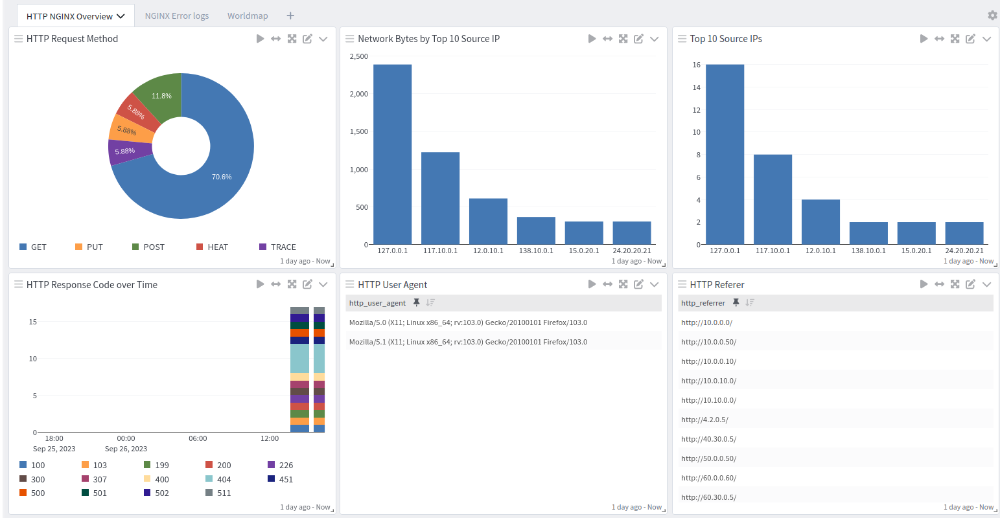

NGINX [Engine x] is an HTTP Server that runs on Linux systems. It was originally written by Igor Sysoev and publicly released in 2004. This pack parses NGINX access and error logs into Graylog schema-compatible fields.
NGINX 1.18
NGINX 1.24
Hint: Works with all NGINX versions using the
combined log format.
8.2212.0
Graylog server with a valid Enterprise license.
Log delivery via Filebeat (with Graylog Sidecar) or rsyslog.
The pack supports a non-standard log folder as long as the file names (access.log / error.log) do not change.
This technology pack includes 1 stream:
Hint: If this stream does not exist prior to the
activation of this pack then it will be created and configured to route messages to this stream and the
associated index set. There should not be any stream rules configured for this stream.
This technology pack includes 1 index set definition:
Hint: If this index set is already defined, then
nothing will be changed. If this index set does not exist, then it will be created with retention
settings of a daily rotation and 90 days of retention. These settings can be adjusted as required after
installation.
# Access log version 1.18
127.0.0.1 - - [04/Mar/2023:19:25:07 -0600] "GET / HTTP/1.1" 200 3543 "-" "Mozilla/5.0 (X11; Ubuntu; Linux x86_64; rv:109.0) Gecko/20100101 Firefox/109.0"
# Access log version 1.24
127.0.0.1 - - [13/Sep/2023:08:34:54 -0500] "GET / HTTP/1.1" 200 615 "-" "Mozilla/5.0 (X11; Linux x86_64; rv:103.0) Gecko/20100101 Firefox/103.0" "-"
2023/03/05 09:34:46 [emerg] 2032#2032: no "ssl_certificate" is defined for the "listen ... ssl" directive in /etc/nginx/sites-enabled/default:21
2023/01/25 11:49:34 [error] 54043#0: *1 open() "/usr/local/stefan/nginx/1.10.2_1/html/favicon.ico" failed (2: No such file or directory), client: 127.0.0.1, server: localhost, request: "GET /favicon.ico HTTP/1.1", host: "localhost:8080", referrer: "http://localhost:8080/"
Parsing rules to extract NGINX access and error logs into Graylog schema-compatible fields.
GIM categorization: access logs receive code 180200 (http.communication); error logs receive code 211504 (service error).
HTTP response code lookup mapped to NGINX-specific vendor response names.
Event severity lookup for NGINX error log severity levels.
NGINX Spotlight overview dashboard.
GIM categorization is provided for the following messages:
| Log Type | gim_event_type_code | gim_event_class | gim_event_category | gim_event_subcategory | gim_event_type |
|---|---|---|---|---|---|
| HTTP Access Log | 180200 | protocol | http | http.communication | http communication |
| HTTP Error Log | 211504 | endpoint | service | service.state | service error |
| Field Name | Description |
|---|---|
| gim_event_type_code | GIM event type code. Set to 180200 (http.communication) for all access log entries. |
| http_referrer | The referrer URL sent by the browser/client (the page that linked to this request), when present. |
| ident | Client identity value from the ident field (second field in the log line; rarely populated, typically a dash). |
| rawrequest | The full request text as logged, captured when it does not match the expected METHOD path HTTP/version format. |
| http_referrer_host | The hostname extracted from the referrer URL, when present. |
| http_request_method | The HTTP method used for the request (for example: GET, POST, PUT). |
| http_request_path | The path requested (for example: /index.html or /api/v1/items?id=1). |
| http_response_code | The HTTP status code the server returned (for example: 200, 404, 500). |
| http_user_agent | The client's User-Agent string (browser/app identifier), when present. |
| http_version | The HTTP version used in the request (for example: 1.1 or 2.0). |
| network_bytes | How many bytes were sent back in the response. |
| nginx_http_timestamp | The timestamp as recorded in the NGINX access log entry. |
| source_hostname | Client hostname making the request, when the log records a hostname instead of an IP address. |
| source_ip | Client IP address making the request. |
| user_name | Authenticated username for the request, if any. |
| vendor_http_response | NGINX-specific response description name (for example: NGX_HTTP_OK, NGX_HTTP_NOT_FOUND). |
| Field Name | Description |
|---|---|
| application_name | Set to nginx_web_http_error for all error log entries. |
| connection_id | NGINX connection number associated with the error, when present. |
| event_created | The date and time when the error log entry was written. |
| event_severity | Normalized severity level (for example: informational, low, medium, high, critical). |
| event_severity_level | Numeric severity level from 1 (debug/info) to 5 (emerg/alert/crit). |
| event_source_product | Set to nginx_web. |
| gim_event_type_code | GIM event type code. Set to 211504 (service error) for all error log entries. |
| host_ip | The host IP parsed from the error message context, when present. |
| http_referrer | The referrer URL mentioned in the error context, when present. |
| http_request_method | The HTTP method parsed from the request context in the error message, when present. |
| http_request_path | The request path parsed from the request context in the error message, when present. |
| http_version | The HTTP version parsed from the request context in the error message, when present. |
| network_protocol | The network protocol (for example: HTTP), parsed from the request context, when present. |
| process_parent_id | The NGINX master process ID (PID) that wrote the log entry. |
| process_thread_id | The NGINX worker process ID (TID) that wrote the log entry. |
| service_name | Set to NGINX_SERVICE for all error log entries. |
| source_ip | Client IP address parsed from the error message context, when present. |
| vendor_event_description | The main error message text. |
| vendor_event_severity | NGINX severity level as reported in the log (for example: emerg, alert, crit, error, warn, notice, info, debug). |
| vendor_server_hostname | The server hostname parsed from the error message context, when present (for example: localhost). |
| vendor_server_ip | The server IP parsed from the error message context, when present. |
Please refer to the official Graylog Sidecar documentation to configure your Graylog server and client(s).
Create a global Beats input in Graylog.
Create a Graylog REST API access token.
Create a (Linux) filebeat configuration under Sidecar > Configuration with a filebeat on linux collector.
Configure the collector with the correct Graylog server IP under hosts and
set the field event_source_product to nginx-web.
Save the configuration.
Install Graylog Sidecar on the client host and configure it with your Graylog server URL and API token.
Assign the configuration to your host in Graylog Sidecar.
Hint: It is possible to run the NGINX web server
and Graylog on the same machine.
Requires a configured UDP or TCP syslog input in Graylog and rsyslog installed on the NGINX host.
Install rsyslog via the official documentation.
In /etc/rsyslog.conf, add or modify the MODULES section to enable UDP
reception and forward to Graylog:
Add the following imfile configuration to forward NGINX log files to Graylog:
Restart the rsyslog service: sudo systemctl restart rsyslog
Warning: This configuration is for UDP. UDP is
not a reliable protocol; consider TCP if reliability is required. After installing rsyslog, deactivate
any active default rules (for example, 50-default.conf) that log system or kernel messages if they are
not needed.
The NGINX spotlight offers a dashboard with 1 tab:
